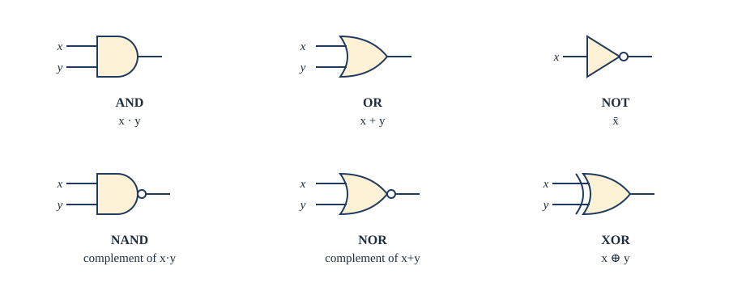
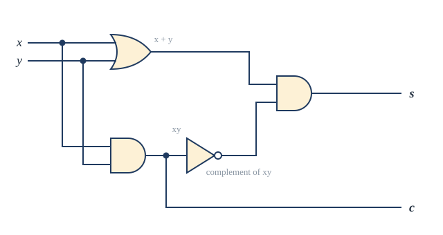
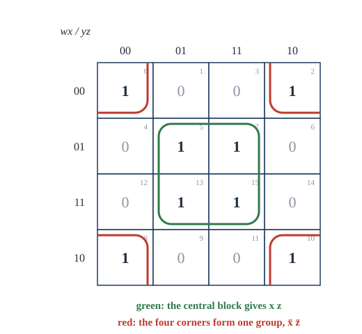

Chapter 13: Boolean Algebra and Logic Circuits¶
The algebra of 0 and 1, and the circuits built from it
Learning outcomes
After this chapter you should be able to:
- evaluate Boolean expressions and functions, and count the Boolean functions of \(n\) variables;
- prove Boolean identities, use the duality principle, and recognise other Boolean algebras (sets, logic, divisors);
- write any Boolean function in sum-of-products and product-of-sums form, and with NAND or NOR alone;
- design combinational circuits from AND, OR and NOT gates, including a majority circuit, a half adder and a full adder;
- simplify Boolean expressions with Karnaugh maps of two, three and four variables, using don't-care conditions.
13.1 Boolean functions¶
In 1854 George Boole published An Investigation of the Laws of Thought, which treated logic as algebra. Nearly a century later, in a 1937 thesis, the engineer C. E. Shannon showed that the same algebra describes circuits of switches. That observation is the foundation of digital electronics: every processor is a very large Boolean expression made of transistors.
Let \(B = \{0, 1\}\). Three operations are defined on \(B\):
| \(x\) | \(y\) | \(x + y\) (OR, sum) | \(x \cdot y\) (AND, product) | \(\overline{x}\) (NOT, complement) |
|---|---|---|---|---|
| 1 | 1 | 1 | 1 | 0 |
| 1 | 0 | 1 | 0 | 0 |
| 0 | 1 | 1 | 0 | 1 |
| 0 | 0 | 0 | 0 | 1 |
Table 13.1. The Boolean operations. (The complement column refers to \(x\) only.)
These are \(\vee\), \(\wedge\) and \(\neg\) of Chapter 1 with 1 for true and 0 for false; the notation \(+\) and \(\cdot\) is traditional in circuit design. Note that \(1 + 1 = 1\): Boolean sum is not ordinary addition. As in ordinary algebra we often write \(xy\) for \(x \cdot y\), and the operations bind in the order complement, product, sum, so \(x + y\overline{z}\) means \(x + (y \cdot \overline{z})\).
Definition: Boolean function
A Boolean variable takes values in \(B\). A Boolean function of degree \(n\) is a function \(F : B^n \to B\). A Boolean expression in variables \(x_1, \dots, x_n\) is built from \(0\), \(1\) and the variables with \(+\), \(\cdot\) and complement; every expression defines a Boolean function.
Example 13.1: A Boolean function from an expression
Problem. Tabulate \(F(x, y, z) = xy + \overline{z}\).
Solution.
| \(x\) | \(y\) | \(z\) | \(xy\) | \(\overline{z}\) | \(F\) |
|---|---|---|---|---|---|
| 1 | 1 | 1 | 1 | 0 | 1 |
| 1 | 1 | 0 | 1 | 1 | 1 |
| 1 | 0 | 1 | 0 | 0 | 0 |
| 1 | 0 | 0 | 0 | 1 | 1 |
| 0 | 1 | 1 | 0 | 0 | 0 |
| 0 | 1 | 0 | 0 | 1 | 1 |
| 0 | 0 | 1 | 0 | 0 | 0 |
| 0 | 0 | 0 | 0 | 1 | 1 |
A Boolean function of degree \(n\) is determined by its value on each of the \(2^n\) elements of \(B^n\), and each value is 0 or 1. By the product rule there are
Boolean functions of degree \(n\): 4 of degree 1, 16 of degree 2, 256 of degree 3, and \(2^{16} = 65{,}536\) of degree 4. Two expressions are equivalent if they define the same function.
13.2 Identities and Boolean algebras¶
The identities of Boolean algebra are the laws of logic of Table 1.6 and the set identities of Table 4.2 in a third notation. Each can be checked with a table of the 2, 4 or 8 cases.
| Name | Identity | Dual |
|---|---|---|
| Double complement | \(\overline{\overline{x}} = x\) | |
| Idempotent | \(x + x = x\) | \(x \cdot x = x\) |
| Identity | \(x + 0 = x\) | \(x \cdot 1 = x\) |
| Domination | \(x + 1 = 1\) | \(x \cdot 0 = 0\) |
| Commutative | \(x + y = y + x\) | \(xy = yx\) |
| Associative | \(x + (y + z) = (x + y) + z\) | \(x(yz) = (xy)z\) |
| Distributive | \(x + yz = (x + y)(x + z)\) | \(x(y + z) = xy + xz\) |
| De Morgan | \(\overline{x + y} = \overline{x}\,\overline{y}\) | \(\overline{xy} = \overline{x} + \overline{y}\) |
| Absorption | \(x + xy = x\) | \(x(x + y) = x\) |
| Complement | \(x + \overline{x} = 1\) | \(x\overline{x} = 0\) |
Table 13.2. Boolean identities.
A distributive law with no school counterpart
\(x + yz = (x + y)(x + z)\) is false for ordinary numbers (\(1 + 2 \cdot 3 \ne (1 + 2)(1 + 3)\)) but true in Boolean algebra: in Boolean algebra, sum distributes over product as well as product over sum.
Duality¶
The dual of a Boolean expression is obtained by exchanging \(+\) with \(\cdot\) and \(0\) with \(1\) (leaving complements and variables alone). The dual of \(x(y + 0)\) is \(x + y \cdot 1\). In Table 13.2 each identity in the last column is the dual of the one beside it, and this is no accident.
The duality principle
If an identity holds in Boolean algebra, its dual also holds.
The reason is that the axioms of Boolean algebra (below) come in dual pairs, so any proof of an identity can be turned into a proof of its dual by dualising every step.
Example 13.2: Simplifying with the identities
Problem. Show that \(xy + x\overline{y} + \overline{x}y = x + y\).
Solution.
Abstract Boolean algebras¶
Logic with \(\vee, \wedge, \neg\), sets with \(\cup, \cap\) and complement, and \(\{0, 1\}\) with \(+, \cdot\) and complement all obey the same laws. Mathematicians capture what they share in a definition.
Definition: Boolean algebra
A Boolean algebra is a set \(B\) with two binary operations \(\vee\) and \(\wedge\), a unary operation \(\overline{\phantom{x}}\), and two distinct elements \(0\) and \(1\), such that for all \(x, y, z \in B\):
- identity: \(x \vee 0 = x\) and \(x \wedge 1 = x\);
- complement: \(x \vee \overline{x} = 1\) and \(x \wedge \overline{x} = 0\);
- associative: \((x \vee y) \vee z = x \vee (y \vee z)\) and \((x \wedge y) \wedge z = x \wedge (y \wedge z)\);
- commutative: \(x \vee y = y \vee x\) and \(x \wedge y = y \wedge x\);
- distributive: \(x \vee (y \wedge z) = (x \vee y) \wedge (x \vee z)\) and \(x \wedge (y \vee z) = (x \wedge y) \vee (x \wedge z)\).
All the other identities of Table 13.2 can be proved from these. Examples of Boolean algebras:
- \(\{0, 1\}\) with \(+\), \(\cdot\) and complement;
- the power set \(\mathcal{P}(S)\) of any set, with \(\cup\), \(\cap\), complement, \(\varnothing\) and \(S\);
- the divisors of \(30\) with \(\mathrm{lcm}\) as \(\vee\), \(\gcd\) as \(\wedge\), \(\overline{x} = 30/x\), \(0 = 1\) and \(1 = 30\). (Its Hasse diagram is the cube of Exercise 5.5; it works for any product of distinct primes.)
As promised in Section 5.5, a Boolean algebra is a lattice: \(x \preceq y\) when \(x \wedge y = x\) defines a partial order in which \(x \vee y\) is the least upper bound and \(x \wedge y\) the greatest lower bound.
Example 13.3: An identity from the axioms
Problem. Prove the idempotent law \(x \vee x = x\) from the axioms alone.
Solution.
Dualising every step proves \(x \wedge x = x\).
13.3 Normal forms¶
Every Boolean function can be written as an expression, in a standard way. A literal is a variable or its complement. A minterm in \(x_1, \dots, x_n\) is a product \(y_1 y_2 \cdots y_n\) with each \(y_i\) equal to \(x_i\) or \(\overline{x_i}\). A minterm is 1 for exactly one combination of values: \(x\overline{y}z\) is 1 only when \(x = 1\), \(y = 0\), \(z = 1\).
Theorem 13.1 (sum-of-products expansion)
Every Boolean function that is not identically 0 is the sum of the minterms of the rows where it equals 1.
Proof. The sum is 1 exactly when one of the minterms is 1, that is, exactly in the chosen rows. \(\blacksquare\)
This is the disjunctive normal form of Section 1.6. The dual construction gives the product-of-sums (conjunctive normal) form, a product of maxterms \(y_1 + \dots + y_n\), one for each row where the function is 0.
Example 13.4: Sum of products
Problem. Find the sum-of-products expansion of \(F(x, y, z) = (x + y)\overline{z}\).
Solution. \(F = 1\) when \(\overline{z} = 1\) and \(x + y = 1\), that is, in the rows \((1, 1, 0)\), \((1, 0, 0)\) and \((0, 1, 0)\). So
Minterms are often numbered by reading the row as a binary number: in \(x, y, z\), the minterm \(\overline{x}y\overline{z}\) for row \(010\) is \(m_2\). The function above is \(F = m_6 + m_4 + m_2\), written \(\sum m(2, 4, 6)\).
Theorem 13.1 shows that \(\{+, \cdot, \overline{\phantom{x}}\}\) is functionally complete: every Boolean function can be built from them. By De Morgan, \(x + y = \overline{\overline{x}\,\overline{y}}\), so \(\{\cdot, \overline{\phantom{x}}\}\) suffices too. Two single operations are complete by themselves:
- NAND, \(x \uparrow y = \overline{xy}\): \(\;\overline{x} = x \uparrow x\), \(\;xy = (x \uparrow y) \uparrow (x \uparrow y)\), \(\;x + y = (x \uparrow x) \uparrow (y \uparrow y)\);
- NOR, \(x \downarrow y = \overline{x + y}\): \(\;\overline{x} = x \downarrow x\), \(\;x + y = (x \downarrow y) \downarrow (x \downarrow y)\), \(\;xy = (x \downarrow x) \downarrow (y \downarrow y)\).
NAND gates are cheap to make with transistors, so a chip can be manufactured from one kind of gate repeated millions of times.
13.4 Logic gates and circuits¶
A logic gate is an electronic device that computes a Boolean operation on its input signals (high voltage for 1, low for 0). Figure 13.1 shows the standard symbols. Gates are wired together into combinational circuits, whose outputs depend only on the current inputs (circuits with memory, whose outputs depend also on the past, are sequential; Chapter 14 models them as finite-state machines).

To build a circuit for a function, write the function as an expression and draw a gate for each operation.
Example 13.5: A majority voting circuit
Problem. A committee of three votes yes (1) or no (0). Design a circuit whose output is 1 when at least two vote yes.
Solution. The function is 1 in rows \(110, 101, 011, 111\). The sum of products is \(xy\overline{z} + x\overline{y}z + \overline{x}yz + xyz\), which simplifies (Example 1.7, or the Karnaugh map in Exercise 4) to
The circuit has three AND gates, for \(xy\), \(xz\) and \(yz\), feeding one three-input OR gate.
Adders¶
Arithmetic in a computer is done by circuits. Adding two one-bit numbers \(x\) and \(y\) gives a two-bit result: a sum bit \(s\) and a carry bit \(c\).
| \(x\) | \(y\) | \(c\) | \(s\) |
|---|---|---|---|
| 0 | 0 | 0 | 0 |
| 0 | 1 | 0 | 1 |
| 1 | 0 | 0 | 1 |
| 1 | 1 | 1 | 0 |
Table 13.3. Adding two bits.
So \(c = xy\) and \(s = x \oplus y = x\overline{y} + \overline{x}y\), which can also be written \(s = (x + y)\overline{xy}\). This circuit is a half adder (Figure 13.2).

To add numbers of many bits, each position must add three bits: the two input bits and the carry from the position to its right. A full adder does this. Its outputs are
that is, \(s\) is 1 when an odd number of inputs are 1, and \(c_{\text{out}}\) is the majority function of Example 13.5. A full adder can be built from two half adders and an OR gate: the first adds \(x\) and \(y\), the second adds \(c_{\text{in}}\) to the first sum, and the carry out is 1 if either half adder produced a carry. Chaining \(n\) full adders, each passing its carry to the next, gives a ripple-carry adder for \(n\)-bit numbers. (Faster adders compute the carries in parallel, at the cost of more gates.)
13.5 Minimising circuits with Karnaugh maps¶
Different expressions for the same function give circuits of different sizes. The sum of products from Theorem 13.1 is usually far from the smallest. A Karnaugh map (K-map) is a way of seeing the simplifications.
The idea: two minterms that differ in exactly one literal combine, since \(x y + x\overline{y} = x(y + \overline{y}) = x\). A K-map arranges the minterms in a grid so that minterms differing in one literal are adjacent. For three variables, the rows are labelled by \(x\) and the columns by \(yz\) in the order \(00, 01, 11, 10\) (a Gray code: neighbouring labels differ in one bit), and the left and right edges count as adjacent, as if the map were wrapped round a cylinder. For four variables the rows are labelled \(wx\) in the same order, and the top and bottom edges are adjacent too.
To simplify:
- put a 1 in each cell whose minterm is in the function;
- cover all the 1s with rectangular groups of 1, 2, 4, 8, ... adjacent cells, each group as large as possible, using as few groups as possible (groups may overlap);
- each group gives one product: the literals that are constant across the group.
A group of \(2^k\) cells eliminates \(k\) variables.
Example 13.6: A three-variable map
Problem. Simplify \(F = \sum m(0, 2, 3, 4, 6, 7)\) in the variables \(x, y, z\).
Solution.
| \(x \backslash yz\) | 00 | 01 | 11 | 10 |
|---|---|---|---|---|
| 0 | 1 | 0 | 1 | 1 |
| 1 | 1 | 0 | 1 | 1 |
The two right columns (\(y = 1\)) form a group of four: the product \(y\). The first and last columns (\(z = 0\)) are adjacent because the map wraps round, and form another group of four: the product \(\overline{z}\). Every 1 is covered, so \(F = y + \overline{z}\). Six minterms of three literals each have become two single literals.
Example 13.7: A four-variable map
Problem. Simplify \(F = \sum m(0, 2, 5, 7, 8, 10, 13, 15)\) in \(w, x, y, z\).
Solution. The map (Figure 13.3) has 1s in the four corners and in the four central cells. The four corners are mutually adjacent (the map wraps both ways) and form a group with \(x = 0\), \(z = 0\): the product \(\overline{x}\,\overline{z}\). The central square has \(x = 1\), \(z = 1\): the product \(xz\). So
which is 1 exactly when \(x = z\): the function ignores \(w\) and \(y\) entirely.

Don't-care conditions¶
Sometimes some input combinations never occur, so the output for them does not matter. Such don't-care cells, marked \(d\), may be included in a group when that makes the group larger, and left out otherwise.
Example 13.8: Using don't cares
Problem. A decimal digit \(0\) to \(9\) is given in binary as \(wxyz\) (so the combinations 1010 to 1111 never occur). Design a simple circuit whose output is 1 when the digit is 5 or more.
Solution. \(F = \sum m(5, 6, 7, 8, 9)\) with don't cares \(d(10, 11, 12, 13, 14, 15)\). Treating the don't cares as 1 where useful: the bottom two rows (\(w = 1\), all 1s or \(d\)) form a group of eight giving \(w\); the cells with \(x = 1\), \(z = 1\) (5, 7, 13, 15) give \(xz\); the cells with \(x = 1\), \(y = 1\) (6, 7, 14, 15) give \(xy\). So \(F = w + xz + xy\). Without the don't cares the expression would have to avoid minterms 10 to 15 and would be longer.
Karnaugh maps are practical by hand for up to four or five variables. For more, the Quine-McCluskey method carries out the same combining systematically in a table, and is suitable for computers; circuit design software uses refinements of such methods.
13.6 Summary¶
Summary
- Boolean algebra on \(\{0, 1\}\) has sum (OR), product (AND) and complement (NOT). There are \(2^{2^n}\) Boolean functions of \(n\) variables.
- The Boolean identities mirror the laws of logic and of sets; every identity has a valid dual (swap \(+\) with \(\cdot\) and \(0\) with \(1\)). Sets, logic and the divisors of 30 are Boolean algebras.
- Every function is a sum of minterms and a product of maxterms; \(\{+, \cdot, \overline{\phantom{x}}\}\), NAND alone and NOR alone are functionally complete.
- Gates compute Boolean operations; circuits realise expressions. The half adder has \(s = x \oplus y\), \(c = xy\); the full adder has \(s = x \oplus y \oplus c_{\text{in}}\) and \(c_{\text{out}}\) equal to the majority function of \(x, y, c_{\text{in}}\).
- Karnaugh maps place adjacent minterms side by side (in Gray-code order, wrapping round); a group of \(2^k\) ones eliminates \(k\) variables. Don't cares may be used to enlarge groups.
13.7 Exercises¶
Exercise 1
Evaluate \(\overline{x + y}\,z + x\overline{z}\) at \((x, y, z) = (0, 0, 1)\) and \((1, 1, 0)\).
Answer
At \((0, 0, 1)\): \(\overline{0 + 0} \cdot 1 + 0 \cdot 0 = 1 \cdot 1 + 0 = 1\). At \((1, 1, 0)\): \(\overline{1} \cdot 0 + 1 \cdot 1 = 0 + 1 = 1\).
Exercise 2
Prove the absorption law \(x + xy = x\) using the identities of Table 13.2, and state its dual.
Answer
\(x + xy = x \cdot 1 + x y = x(1 + y) = x \cdot 1 = x\), using identity, distributive and domination. Dual: \(x(x + y) = x\).
Exercise 3
Find the sum-of-products expansion of \(F(x, y) = x + \overline{y}\), and the product-of-sums expansion of the same function.
Answer
\(F = 1\) in rows \(11, 10, 00\): \(F = xy + x\overline{y} + \overline{x}\,\overline{y}\). \(F = 0\) only in row \(01\), ruled out by the maxterm \(x + \overline{y}\): the product of sums is just \(x + \overline{y}\).
Exercise 4
Use a Karnaugh map to simplify the majority function \(\sum m(3, 5, 6, 7)\) in \(x, y, z\).
Answer
| \(x \backslash yz\) | 00 | 01 | 11 | 10 |
|---|---|---|---|---|
| 0 | 0 | 0 | 1 | 0 |
| 1 | 0 | 1 | 1 | 1 |
Three overlapping pairs, all containing \(m_7\): \(\{m_3, m_7\}\) gives \(yz\); \(\{m_5, m_7\}\) gives \(xz\); \(\{m_6, m_7\}\) gives \(xy\). So \(M = xy + xz + yz\).
Exercise 5
Simplify \(\sum m(0, 1, 2, 3, 8, 9, 10, 11)\) in \(w, x, y, z\), and \(\sum m(1, 3, 5, 7, 9, 11, 13, 15)\).
Answer
The first is the two rows with \(x = 0\) (\(wx = 00\) and \(10\), adjacent by wrapping): \(\overline{x}\). The second is every minterm with \(z = 1\): \(z\).
Exercise 6
Express \(x + y\) using only NAND, and \(\overline{x}y\) using only NOR.
Answer
\(x + y = \overline{\overline{x}\,\overline{y}} = (x \uparrow x) \uparrow (y \uparrow y)\). For \(\overline{x}y = \overline{x + \overline{y}}\) (De Morgan): \(\overline{y} = y \downarrow y\), so \(\overline{x}y = x \downarrow (y \downarrow y)\).
Exercise 7
Give the truth table of a full adder and check that \(c_{\text{out}} = xy + xc_{\text{in}} + yc_{\text{in}}\).
Answer
| \(x\) | \(y\) | \(c_{\text{in}}\) | \(c_{\text{out}}\) | \(s\) |
|---|---|---|---|---|
| 0 | 0 | 0 | 0 | 0 |
| 0 | 0 | 1 | 0 | 1 |
| 0 | 1 | 0 | 0 | 1 |
| 0 | 1 | 1 | 1 | 0 |
| 1 | 0 | 0 | 0 | 1 |
| 1 | 0 | 1 | 1 | 0 |
| 1 | 1 | 0 | 1 | 0 |
| 1 | 1 | 1 | 1 | 1 |
\(c_{\text{out}}\) is 1 exactly when at least two inputs are 1, which is \(xy + xc_{\text{in}} + yc_{\text{in}}\); \(s\) is 1 when an odd number of inputs are 1.
Exercise 8
In the Boolean algebra of the divisors of 30, compute \(6 \vee 10\), \(6 \wedge 10\) and \(\overline{6}\), and check \(6 \vee \overline{6} = 1\) (the top element).
Answer
\(6 \vee 10 = \mathrm{lcm}(6, 10) = 30\); \(6 \wedge 10 = \gcd(6, 10) = 2\); \(\overline{6} = 30/6 = 5\). Then \(6 \vee 5 = \mathrm{lcm}(6, 5) = 30\), the top element, and \(6 \wedge 5 = \gcd(6, 5) = 1\), the bottom element.
13.8 Quiz¶
Check your understanding of Boolean algebra
Exercise 1
In Boolean algebra, what is 1 + 1?
Answer
1
Exercise 2
How many Boolean functions of 2 variables are there?
Answer
16
Exercise 3
The dual of x + 0 = x is
- x · 1 = x
- x · 0 = 0
- x + 1 = 1
- x̄ + 0 = x̄
Answer
x · 1 = x
Exercise 4
Which single gate type is functionally complete?
- AND
- OR
- NAND
- XOR
Answer
NAND
Exercise 5
The carry output of a half adder with inputs x and y is
- x + y
- xy
- x ⊕ y
- x̄y
Answer
xy
Exercise 6
A group of 4 adjacent ones in a Karnaugh map eliminates how many variables?
Answer
2
Exercise 7
In a three-variable Karnaugh map the columns are ordered 00, 01, 11, 10 because
- neighbouring columns must differ in exactly one bit
- it is the binary order
- it makes the map symmetric
- it is alphabetical
Answer
neighbouring columns must differ in exactly one bit